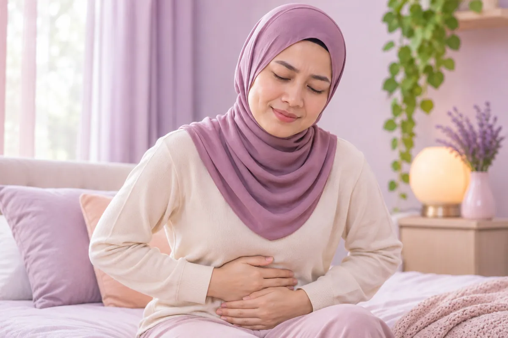

Hati, pundi hempedu & pankreas
58 keadaan dan gejala
 Abses hati
Abses hati Batu hempedu
Batu hempedu- Batu hempedu
- Batu saluran hempedu
- Batu saluran hempedu dalam hati (intrahepatik)
- Batu saluran hempedu luar hati (ekstrahepatik)
- Batu saluran hempedu sepunya
 Cecair dalam perut yang sukar dirawat (asites)
Cecair dalam perut yang sukar dirawat (asites)- Ensefalopati hepatik (gangguan otak berkaitan hati)
- Fibrosis hati (parut pada hati)
- Fungsi hati lemah (insufisiensi hati)
 Hati berlemak
Hati berlemak- Hati berlemak ringan
- Hati berlemak tahap sederhana
- Hati berlemak teruk
- Hemangioma hati (tumor salur darah jinak)
- Hepatitis
- Hepatitis autoimun
- Hepatitis B akut
- Hepatitis B kronik
- Hepatitis B, HBeAg negatif (tiga positif kecil)
- Hepatitis B, HBeAg positif (tiga besar)
- Hepatitis C
- Hepatitis D
- Hepatitis dengan penyakit kuning (ikterik)
- Hepatitis E
- Hipertensi portal (tekanan tinggi vena hati)
- Jangkitan saluran hempedu (kolangitis)
- Jaundis kolestatik
- Jaundis obstruktif
- Kecederaan hati akibat ubat
- Kegagalan hati
- Kegagalan hati akut
- Kesan selepas pembuangan pundi hempedu
- Limpa terlebih aktif (hipersplenisme)
- Nevus labah-labah (angioma labah-labah)
- Pankreatitis (radang pankreas)
- Pankreatitis akut
- Pankreatitis bilier (pankreatitis batu hempedu)
- Pankreatitis kronik (radang pankreas)
- Pelebaran saluran hempedu (sista koledokal)
- Pembawa hepatitis B
- Penyakit hati autoimun
- Penyakit hati berkaitan alkohol
- Penyakit hidatid hati (ekinokokosis)
- Penyakit kuning (jaundis)
- Penyakit Wilson (pengumpulan tembaga)
- Polip pundi hempedu
- Radang pundi hempedu
- Radang pundi hempedu akut (kolesistitis)
- Radang pundi hempedu kronik (kolesistitis)
- Sindrom Budd-Chiari (vena hati tersumbat)
- Sindrom hepatorenal
- Sirosis hati
- Sista hati
- Tumor hati jinak
- Tumor jinak pundi hempedu
- Vena membengkak pada esofagus dan perut (varises)